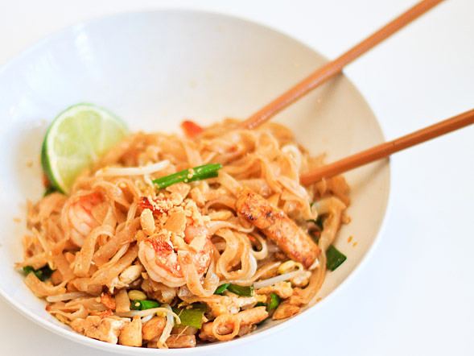

Pad Thai Recipes
Ingridients
- 4 ounces dried Thai rice noodles
- 1 ounces tamarind paste
- 2 tablespoons fish sauce
- 2 tablespoons sugar
- 1 tablespoon rice wine vinegar
- 6 ounces smoked tofu
- 1 to 2 tablespoons peanut oil
- 1 cup scallions
- 2 teaspoons garlic
- 2 eggs,beaten
- 3 ounces bean sprouts,divided
- 1/2 cup shelled peanut,divided
- freshly ground dired red chilli peppers,to taste
- 1 lime,cut into wedges
Method One of Three:
Preparing the Ingredients
1.Roast the peanuts. Preheat the oven to 400 degrees.Place the peanuts in a single layer on a baking sheet. Sprinkle them with salt. Roast the peanuts for about 15 minutes,until they are fragrant and golden brown.
2.Chop the vegetables. Wash and dry the scallions,then set them on a cutting board and dice them. Mince several garlic cloves
3.Soak the noodles.Fill a bowl with hot water and submerge the noodles inside it. Let the noodles soak and soften for several minutes. When they are soft,drain the water and set the noodles aside.
4.Make the sauce.Stir the tarnarind paste into 3/4 cup of boiling water After five minutes,strain the paste through a fine-mesh straiger and place it in a bowl. Add the fish sauce,surger,and rice winevinegar to the bowl and whisk the ingredients together.Set the bowl aside.
5.Saute the tofu.Cut the tofu into strips.Heat a teaspoon of peanut oil in a work or cast iron skillet over medium high heat.When the oil is hot, place the tofu strips in the pan and fry them on one side until they turn golden brown. Place the tofu in a bowl and set it aside.
Method Two of Three:
Cooking the Pad Thai
1.Saute the scallions and garlic.Place the other teaspoon of peanut oil in the pan.Turn the heat to high.Add half of the scallions and Saute for another 10 seconds.
2.Add the noodles and sauce. The noodles in the pan and use tongs to toss them with the other ingredients.Pour the sauce over the noodles and continue tossing. Saute the mixture for about 30 seconds.
3.Cook the eggs.Pour the eggs into the pan and immediately stir them around to scramble them and break them up. The eggs should cook for no more than 30 seconds before you add the remaining ingredients.
4.Add the cabbage and bean sprouts.Toss them with the other ingredients to throughly incorporante them.
5.Add the shrimp and half of the peanuts. Continue tossing the ingredients until everything is heated through. The entire process should't take more than 2 minutes.
Method Three of Three:
Fishing the Pad Thai
1.Transfer the pad thai to a serving dish.Carefully empty the wok or skillet into a large bowl or serving .
2.Garnish the pad thai.Sprinkle the remaining scallions and peanuts over the cooked pad thai,forming a little pile in the center. Sprinkle crushed red pepper over the dish,adding as much as you want to make it spicy.
3.Serve the pad thai
Finished